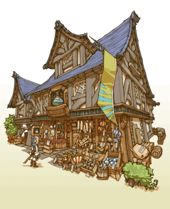

23
|
Types de constructions |
 |
Voici quelques-uns des bâtiments que vous pouvez édifier dans votre royaume.
● Houses (Maisons)  Small House (Petite maison) : habitation pour deux personnes. Ne nécessite que peu d'elementite. Très bien pour augmenter les revenus de départ du royaume. Rappelle un aspirant aventurier.
Small House (Petite maison) : habitation pour deux personnes. Ne nécessite que peu d'elementite. Très bien pour augmenter les revenus de départ du royaume. Rappelle un aspirant aventurier.Spacious House (Grande maison) : nécessite une importante quantité d'elementite. Ce coût est compensé par les revenus plus importants générés par les grandes familles qui habitent ces maisons. Rappelle un aspirant aventurier. |
● Citizen Shops (Magasins des habitants)
Bakery (Boulangerie) : principale source de nourriture pour les citoyens. Ceux qui y effectuent leurs achats rentrent chez eux heureux. Emporium (Grand magasin) : le centre commercial du royaume où les citoyens viennent se fournir en marchandises exotiques. Les objets importés sont aussi une source d'inspiration pour les autres magasins et l'ensemble du royaume.  |
● Adventurer Shops (Magasins des aventuriers)
Weapon Shop (Magasin d'armes) : vend diverses armes, adaptées aux besoins des aventuriers. En soutenant financièrement leurs recherches, vous augmenterez la puissance d'attaque des aventuriers.  Armor Shop (Magasin d'armures) : vend diverses armures destinées aux aventuriers. En finançant leurs recherches, vous améliorerez la capacité de survie des aventuriers. Item Shop (Magasins d'objets) : vend divers objets nécessaires aux aventuriers. Potions et antidotes sont indispensables aux équipes dépourvues de guérisseurs. |
● Adventurer Buildings (Bâtiments des aventuriers)
 White Mage Temple (Temple des mages blancs) : permet d'accéder aux mages blancs et à leurs sorts. Le soutien financier de leurs recherches vous donne accès à des sorts plus puissants.
White Mage Temple (Temple des mages blancs) : permet d'accéder aux mages blancs et à leurs sorts. Le soutien financier de leurs recherches vous donne accès à des sorts plus puissants.Black Mage Academy (Académie des mages noirs) : permet d'accéder aux mages noirs et à leurs sorts. Le soutien financier de leurs recherches vous donne accès à des sorts plus puissants. Training Hall (Salle d'entraînement) : permet l'accès aux compétences des guerriers et augmente l'expérience ("EXP") grâce à l'entraînement. Gaming Hall (Salle de jeux) : permet l'accès aux voleurs et à leurs compétences. Les autres aventuriers peuvent aussi fréquenter ces bâtiments pour se détendre et gagner quelques "gils" supplémentaires. |
● Special Buildings (Bâtiments spéciaux)
 Guild Hall (Maison des corporations) : ce bâtiment abrite l'administration centrale dédiée aux affaires des aventuriers. Vous pouvez y augmenter le nombre d'aventuriers en activité, ainsi que leur rétribution. Tavern (Taverne) : permet aux aventuriers de constituer des équipes avant de se lancer à la conquête des donjons difficiles. C'est aussi là que vous pouvez constituer vos propres équipes. Inn (Auberge) : accueille les aventuriers et les marchands itinérants venus visiter le royaume. |
● Parks (Parcs)
 Fountain Park (Parc à la fontaine) : la verdure apaise le cœur des habitants et des aventuriers.
Fountain Park (Parc à la fontaine) : la verdure apaise le cœur des habitants et des aventuriers.Bulletin Park (Parc d'affichage) : ajoute un panneau d'affichage dans le royaume, vous permettant ainsi de passer plusieurs ordres de mission à la fois. |
 |
 |
 |